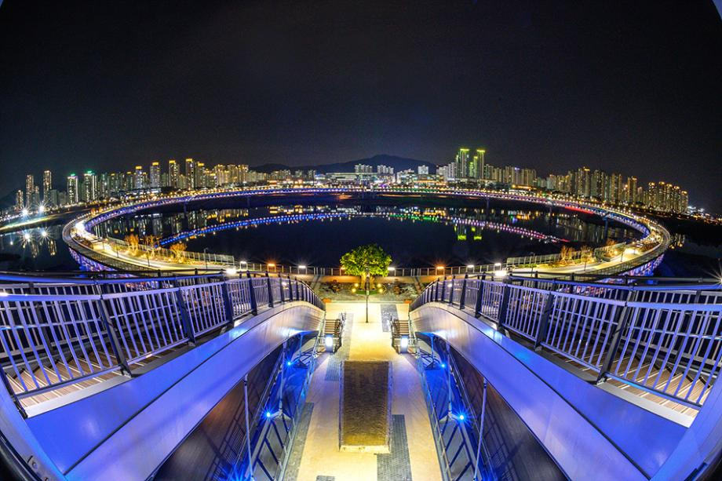
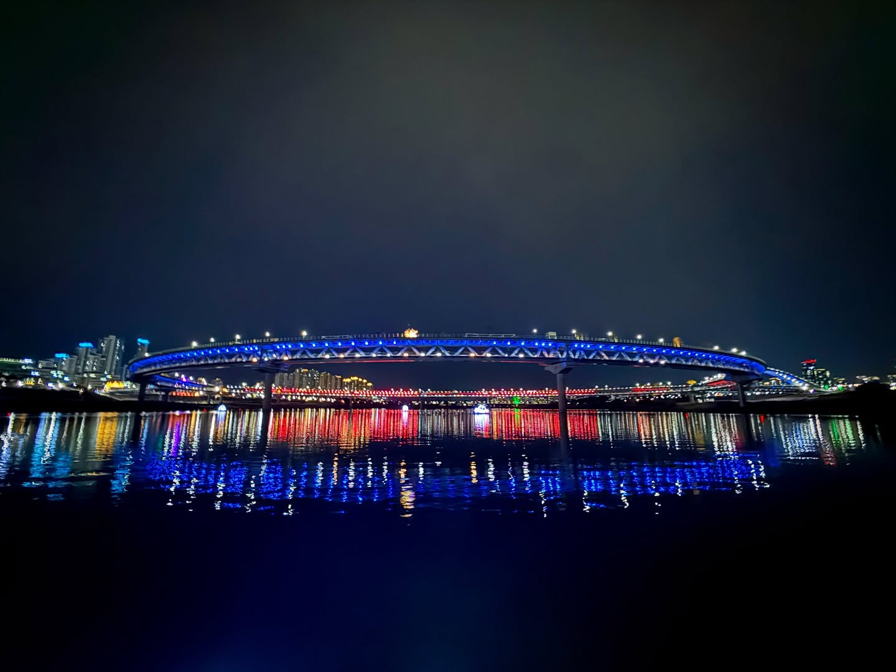

🌲 자연 & 공원
아름다운 자연 속에서 힐링 데이트! 🏞️ 산책, 피크닉, 야경 관람까지 모든 것이 가능한 세종의 야외 명소들을 모아봤어요!
💖 추천 리스트
1. 이응다리 (금강보행교)
세계에서 가장 긴 원형 다리로 유명한 세종의 랜드마크예요. 🌉 낮에는 금강 위를 걷고, 밤에는 화려한 조명 분수쇼와 야경을 감상할 수 있어요! 🌃
1,000원이면 가능한 자전거 데이트도 강력추천해요!
👍주인장 추천: 노을지는 시간 자전거 데이트
1,000원이면 가능한 자전거 데이트도 강력추천해요!
👍주인장 추천: 노을지는 시간 자전거 데이트
세종특별자치시 중앙녹지로 456 (주차장 기준)


🅿️ 주차: 금강보행교 공영 주차장 이용 가능 (무료 주차)
#세종랜드마크 #야경명소 #산책 #자전거데이트
2. 세종호수공원
국내 최대 인공 호수 공원으로, 잔디밭에서 피크닉을 즐기기 완벽한 곳! 돗자리 펴고 여유롭게 데이트하기 최고예요. 🧺
다양한 축제와 공연이 열리는 수상무대섬도 볼거리! 반려동물 동반도 가능해요. 🐶
👍주인장 추천: 호수 바람을 만끽하며 자전거 데이트
다양한 축제와 공연이 열리는 수상무대섬도 볼거리! 반려동물 동반도 가능해요. 🐶
👍주인장 추천: 호수 바람을 만끽하며 자전거 데이트
세종특별자치시 연기면 호수공원길 155


🅿️ 주차: 호수공원 주차장 이용 가능 (무료 주차)
#피크닉 #데이트성지 #반려동물 #대형공원
3. 국립세종수목원
사계절 푸르름을 느낄 수 있는 도심형 수목원! 🌿 특히 이국적인 분위기의 사계절 전시 온실은 비 오는 날이나 추운 날에도 방문하기 좋아요. 🌵
다양한 테마 정원을 천천히 걸으며 자연을 만끽하기에 완벽한 곳!
👍주인장 추천: 사계절 전시 온실 & 한국 전통 정원
다양한 테마 정원을 천천히 걸으며 자연을 만끽하기에 완벽한 곳!
👍주인장 추천: 사계절 전시 온실 & 한국 전통 정원
세종특별자치시 수목원로 136


🅿️ 주차: 수목원 주차장 이용 가능 (주차료 있음, 입장료 별도)
#사계절온실 #힐링 #비오는날데이트 #산책코스